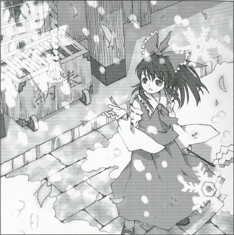

|
Season 119. Classification: Special Feature Article Memo Editor:
Aya Shameimaru
Petals From Heaven In The Spring Of Silver Snow Not a single sign of spring could be seen in the prolonged winterAlmost everyone would recognize that this year's winter was unusually long.  In any other year the cherry blossoms would already be in bloom, but this year the falling snowflakes of a blizzard took the place of falling cherry blossom petals. However, dancing cherry blossom petals were also mysteriously mixed in with the blizzard. No cherry blossoms had bloomed anywhere in Gensokyo, so this fact served to increase the likelihood of this incident being the work of another party. In light of these details, it was confirmed that the shrine maiden began to take action. The shrine maiden's goal seemed to be in the direction the wind was coming from. As always, the shrine maiden encountered youkai, and as she attacked them for no important reason, caution was necessary. From the position of us tengu, those who live in Gensokyo for a long time and are well-informed of its inhabatants are able to learn about most humans and youkai and come to generally understand them a piece at a time. After exterminating a number of unfortunate youkai, the shrine maiden flew to a place high in the sky, above the clouds. Unfortunately, as I am unable to conceal myself above the clouds, I had to abandon any further pursuit. However, as the shrine maiden ascended above the clouds, I was able to determine who was the culprit behind this incident. In a Gensokyo with no blooming cherry blossoms, there were still cherry blossom petals. I suppose this means that the cherry blossom petals were coming from above the clouds. That is to say, the heavens. If they were fully enjoying spring above the clouds, then there is a very high probability that the blizzard on the ground was also the work of the those in the heavens. That was only a guess from back then, but the true motive behind the cause of the incident must have been simple selfishness, due to the fact that those who live in the heavens, like those who live on the ground, enjoy easing the difficulty caused by winter blizzards by having drinking parties in the spring. It's a fluke how these incidents are almost always caused by those with strong powers acting selfishly. And when a major incident occurs, it's up to the shrine maiden to figure out who's behind it. These selfish incidents are only truly troublesome for the powerless humans. For us youkai, our motto is that fun can be found in any kind of situation. In fact, the extended winter was truly troublesome for almost none of the youkai, who found the circumstances enjoyable. For example, I can let the wind take me as far as it can. Riding the wind in such a way is great fun. While trying to master the blizzard was tough, when I was freely riding on the wind, it really felt good. Entrusting myself to the wind, I also noticed that the wind would take me around and around Gensokyo. Even like that, I was able to find evidence that would help me understand who would prevent spring from arriving. Winter ended and spring returned somewhere around 2 or 3 days after the shrine maiden started her activity. If she were a more flexible person, I imagine she also would've enjoyed seeing the cherry blossom petals mix with the snowflakes in the blizzard.
(Aya Shameimaru)
|
|
Touhou Youyoumu ~ Perfect Cherry Blossom. After the scarlet mist incident of the previous year, in May of the present year, Gensokyo was still in the middle of winter. While the usual occurrence of silvery blizzards giving way to cherry blossom blizzards was expected, this year it seemed something was holding back that occurrence. To bring back spring, Reimu relied on her intuition as always and finally arrived at... |
| [PREVIOUS ARTICLE : Scarlet mist Incident] | [INDEX] | [NEXT ARTICLE : Night parade of One Hundred Oni] |